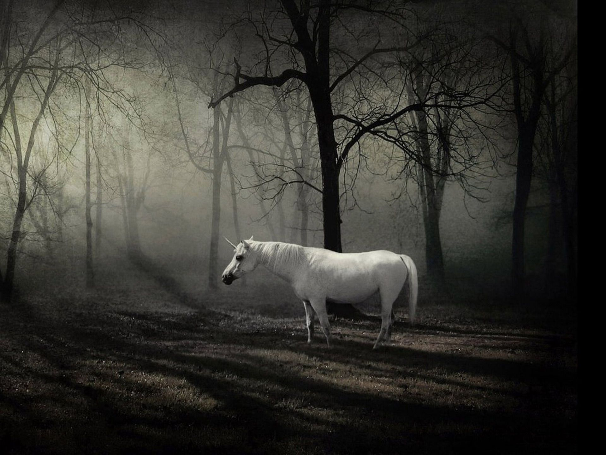

Passei a tarde correndo atrás de borboletas. Meu avô tem uma coleção enorme e agora quero fazer a minha. Acabei me afastando bastante da vila, adentrando um pouco a floresta, mas não importa. Vi uma borboleta violeta linda voando nessa direção. Corro, mas algo me faz parar. Logo na minha frente tem algo muito mais interessante e que me deixou de cabelo em pé: um unicórnio. UM UNICÓRNIO!!!
Acho que estou ficando biruta. Pisco os olhos pra ver se é coisa da minha mente, mas não; o animal continua lá, parado, me olhando. Tento me aproximar dele, mas o bicho sai correndo.
Não sei se estou imaginando coisas, mas, apesar das minhas dúvidas, vou ir atrás dele!